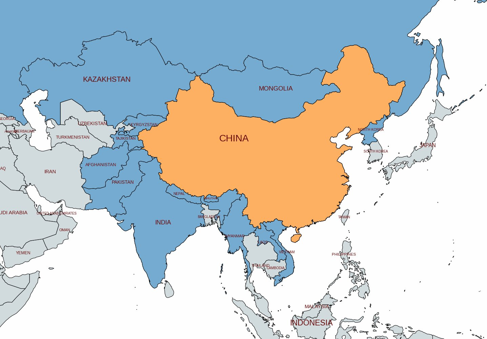
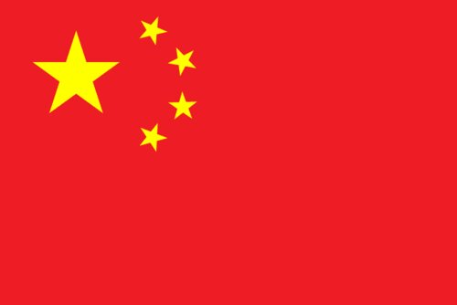
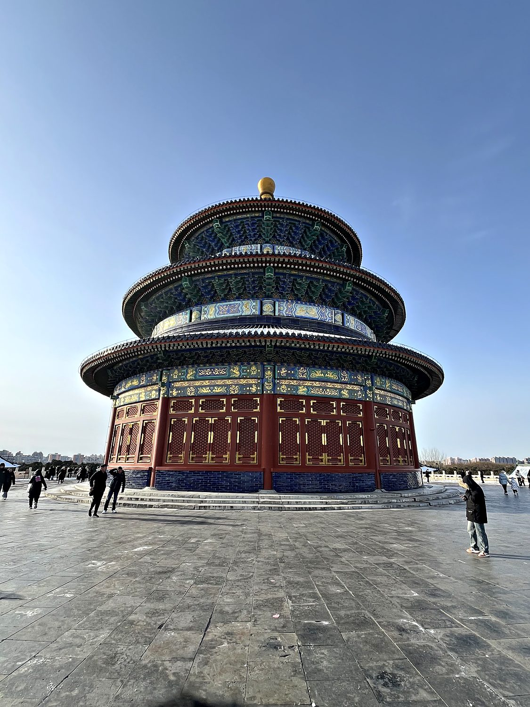
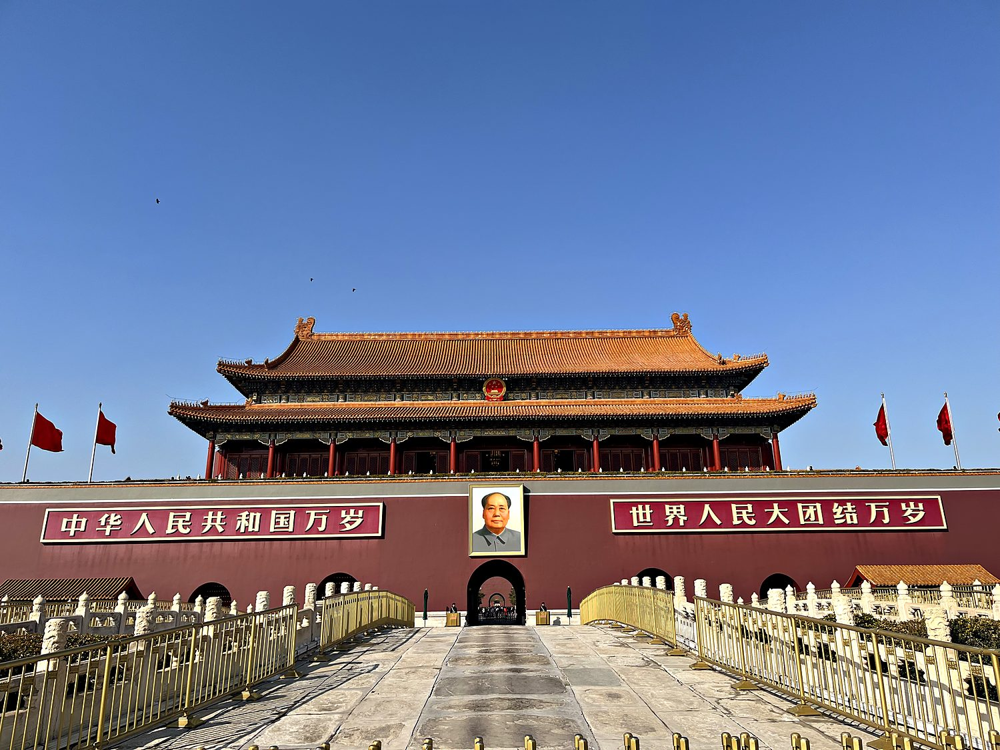
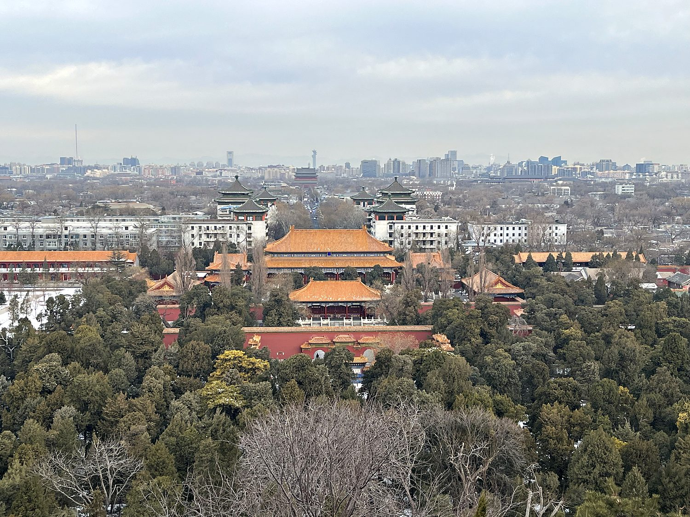

I arrived in Beijing in February 2024, at the tail end of a stint teaching in China, and immediately learned that the country runs on an app. Nearly everything, from metro tickets to museum reservations, is wired into WeChat, and a foreigner without a working Chinese payment account is roughly as functional as a fax machine at a rave. I cannot read Mandarin, and my attempts to ask for directions to the street with a character that looks vaguely like a house next to a symbol that appears to be a cardboard box were unsuccessful. I spent my first evening phoning a travel agency to book attraction tickets I could not book myself, paying several times the going rate for the privilege, and feeling deeply grateful for the patient woman on the other end who sorted it out. Once I made peace with being technologically illiterate for a week, Beijing turned out to be an awesome city. It is clean, efficient, monumental in scale, and layered with thousands of years of history that the government is very much still writing.
Beijing has served as the capital of China, on and off, for the better part of a millennium, anchoring the country through the Yuan, Ming, and Qing dynasties before becoming the seat of the People's Republic in 1949. The name means “Capital of the North,” which pairs neatly with Nanjing, the “Capital of the South.” It is a city built to impress you with sheer scale: boulevards you could land a plane on, squares the size of small nations, and palace complexes that take a full day to circle. My first proper introduction to it was not the city center at all but the Great Wall, a couple of hours north at Mutianyu, where a group of ten of us hiked up a set of aggressively vertical stairs and emerged onto a stone rampart that snaked off over the mountains in both directions. It felt, and I say this with full sincerity, deeply Lord of the Rings-esque. Large characters carved into the mountainside nearby turned out to be a tribute to Chairman Mao, which was my first hint that in China the ancient and the ideological are rarely more than a few feet apart.

China is often described as the world's oldest continuous civilization, and its imperial history stretches back through a long succession of dynasties (Qin, Han, Tang, Song, Yuan, Ming, Qing). Each of these left its mark on the architecture, philosophy, and bureaucracy of the country. The Great Wall that I hiked was not built in one go by one emperor, as the tidy legend suggests, but assembled and reassembled over centuries as successive dynasties tried, with mixed success, to keep steppe nomads out of the fertile heartland. For most of that history China regarded itself, not unreasonably given its size and sophistication, as the center of the civilized world, and to which lesser states sent tribute.

That confidence was shattered in the 19th century during what the Chinese call the Century of Humiliation. Beginning with the Opium Wars, foreign powers (primarily Britain, France, and later Japan) forced a militarily outmatched China into a series of “Unequal Treaties,” carving out concessions, seizing Hong Kong, and helping themselves to trade on humiliating terms. This period is essential context for understanding modern China: spend an afternoon in the National Museum, as I did, and you will see how sharply the memory of that era still shapes the country's posture toward the West and Japan. The Qing dynasty collapsed in 1912, a brutal civil war and Japanese invasion followed, and in 1949 Mao Zedong's Communists prevailed, founding the People's Republic. The museum's halls trace this arc with unmistakable pride. The current leader Xi Jinping makes a quiet cameo in nearly every exhibit panel, feeling less like a personality cult than a persistent, watchful big-brother presence.
On a cold, snow-dusted morning I walked over to the Temple of Heaven, and it may be the single most beautiful building I saw in Beijing. Built in the early 15th century under the Ming dynasty, this was where the emperor (the “Son of Heaven”) came each year to perform elaborate rituals and pray for a good harvest, staking the legitimacy of his entire reign on his ability to keep the cosmos and the crops in alignment. The Hall of Prayer for Good Harvests, pictured here, is a triple-eaved circular hall built entirely without nails, its blue tiles meant to echo the sky. Seeing it dusted in snow, ringed by locals out for a winter stroll, I understood why the Ming architects went to such trouble: it genuinely looks like a structure designed to get heaven's attention.

From the Temple of Heaven I made my way to Tiananmen Square, which, as any well-informed visitor will assure you, is a peaceful, tranquil place where nothing of note has ever happened, and especially not in 1989. It is also one of the largest public squares on Earth, flanked by the National Museum and the Great Hall of the People, and presided over by the Gate of Heavenly Peace, from which Mao proclaimed the People's Republic in 1949. His portrait still hangs above the central archway, framed by two slogans that translate to “Long Live the People's Republic of China” and “Long Live the Great Unity of the World's Peoples.” Standing beneath it, red flags snapping in the wind, you feel the full weight of the state's carefully curated self-image. It is a country that wants you to see continuity between the emperors who once ruled from behind this gate, and the party that rules from beside it now.

Just beyond the gate lies the Forbidden City, the vast palace complex that housed twenty-four emperors of the Ming and Qing dynasties across nearly five centuries. For most of that time, ordinary people were forbidden to enter on pain of death, though today it goes by the rather less foreboding title of the Palace Museum. I had, in a triumph of foreigner-without-WeChat planning, failed to secure a reservation and was politely turned away at the entrance. Undeterred, I climbed the hill in neighboring Jingshan Park, which delivered the view you see here: the golden roofs of the palace marching in perfect axial symmetry toward the horizon, with modern Beijing sprawling beyond. It is, honestly, a better vantage point than you get from inside, and I recommend the accidental strategy of forgetting your reservation to anyone.
